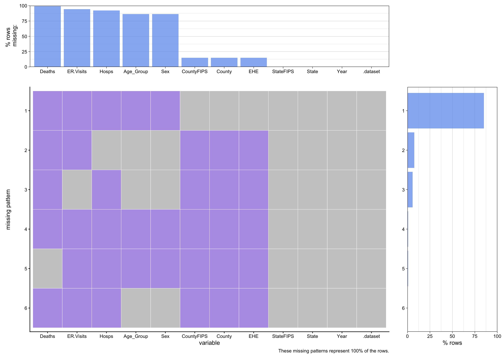
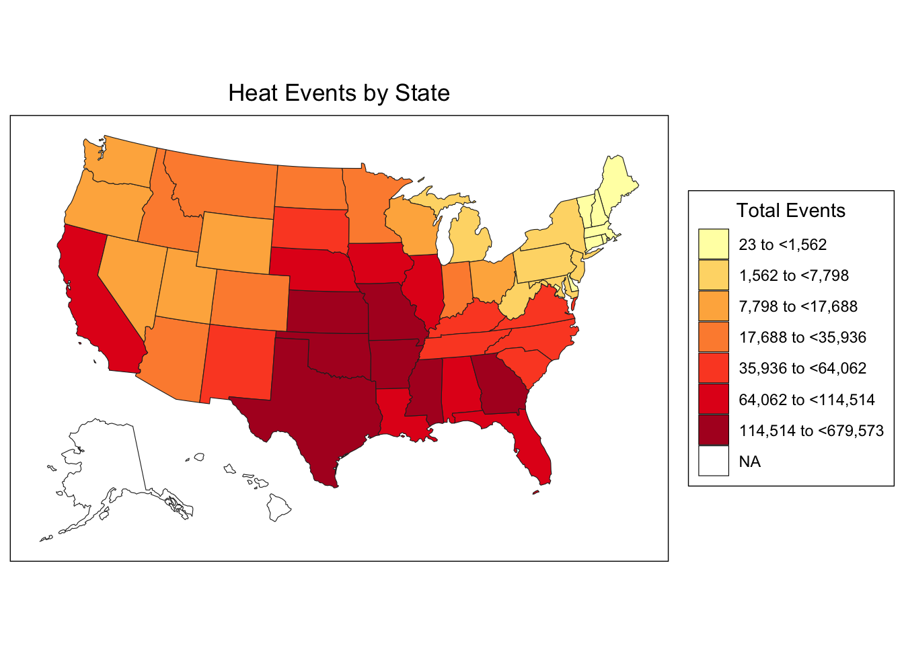
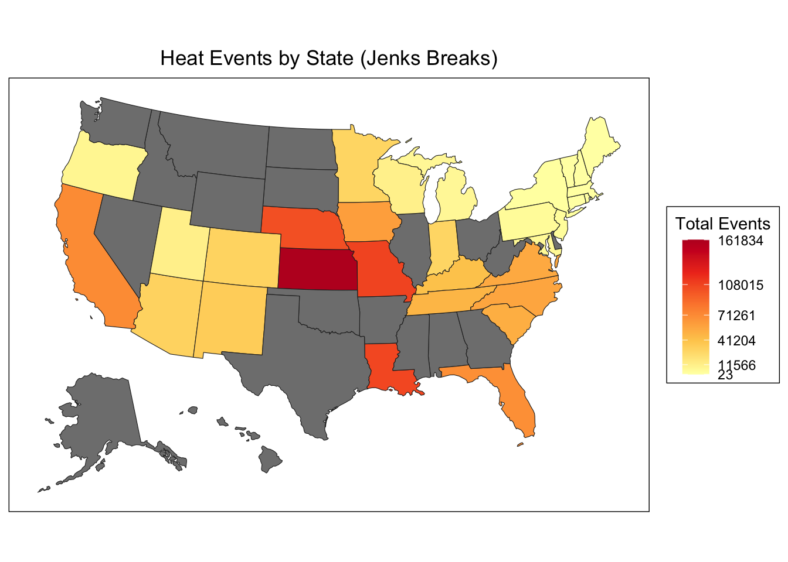

This project uses data from the CDC’s Environmental Public Health Tracking Network (https://ephtracking.cdc.gov/DataExplorer/#/), which provides data and information on environmental hazards, health effects, and population health. We draw on four datasets focusing on heat-related health impacts spanning 2000-2022:
County-level extreme heat events (74,592 observations across 1,806 counties), defined as two or more consecutive days with maximum temperatures ≥90°F, collected by NOAA.
State-level hospitalizations for heat-related illness (6,740 observations across 35 states), from state inpatient discharge databases.
State-level emergency department visits for heat-related illness (5,120 observations across 32 states), from state syndromic surveillance systems.
State-level heat-related deaths (1,173 observations across 50 states through 2022), identified using ICD-10 codes from death certificates.
All health outcome datasets (Tables 2-3) include breakdowns by age group and sex. The data is updated annually by the CDC. Key limitations include incomplete state participation in health outcomes reporting and differences in geographic resolution, with heat events tracked at the county level while health outcomes are only available at the state level. Additionally, the mortality dataset has substantial data suppression where values are not reported when annual deaths fall below 10 for privacy protection.
See ReadME to understand how the dataset has been downloaded from the source.
Attaching package: 'scales'
The following object is masked from 'package:purrr':
discard
The following object is masked from 'package:readr':
col_factor
Since there are values mentioned as Suppressed for the number of deaths, they have been converted to NA instead.
Code
# Get Suppressed to NA in table deathsdeaths[deaths =="Suppressed"] <-NAsuppressed_count <-sum(is.na(deaths$Deaths))
We found that roughly half (52%) of death records were suppressed by the CDC. This happens because the reported annual death counts fall below 10 and it’s a privacy protection measure to prevent identifying individuals in small communities. While this policy makes sense for privacy, it creates a real problem for our analysis. The suppression hits hardest in smaller states and rural counties with lower populations - ironically, these might be exactly the places where heat-related deaths are most unpredictable and where prevention programs could make the biggest difference. By removing this data, we’re essentially limited to studying larger, more populous areas.
Code
# Splitting Age Group"Sex into 2 separate columns for Hospitalization dataset hosp$Age_Group <-str_extract(hosp$Age.Group.Sex, '^[^"]+')hosp$Sex <-str_extract(hosp$Age.Group.Sex, '[^"]+$')# Remove original columnhosp$Age.Group.Sex <-NULL
The original CDC data combines age group and sex into a single column (e.g., “0-4 years”Male”). By splitting this into separate variables, we enable more flexible analysis and we can now examine age patterns independent of sex, sex differences within age groups, or their interaction effects.
Code
# Splitting Age Group"Sex into 2 sepeare columns for Emergency Visits dataseter_visits$Age_Group <-str_extract(er_visits$Age.Group.Sex, '^[^"]+')er_visits$Sex <-str_extract(er_visits$Age.Group.Sex, '[^"]+$')# Remove original columner_visits$Age.Group.Sex <-NULLsuppressWarnings({ er_visits <- er_visits |>mutate(ER.Visits =as.numeric(as.character(ER.Visits)))})
We apply the same age/sex splitting transformation to the ER visits dataset for consistency. The numeric conversion is critical because some values may have been stored as factors or characters. Any NAs created during conversion indicate non-numeric values in the original data (e.g., suppressed values or data quality issues). The ER visits dataset provides a less severe measure of heat-related health impacts compared to hospitalizations or deaths - examining all three outcomes together will reveal the spectrum of heat-related morbidity.
Scale for y is already present.
Adding another scale for y, which will replace the existing scale.
Scale for y is already present.
Adding another scale for y, which will replace the existing scale.

This aggregated missing pattern visualization reveals critical data quality issues across all four datasets.
The plot shows that the deaths dataset has the highest proportion of missing values due to CDC suppression policies. Missing values are NOT randomly distributed and that they likely correlate with smaller populations and lower event frequencies. The heat_events dataset appears most complete, providing reliable environmental exposure data. State participation varies across health outcomes, with some states reporting to some systems but not others.
This pattern of missingness is systematically related to the underlying values (small death counts are suppressed). This means we cannot simply impute missing values without introducing bias. Our analysis strategy must account for this structural missingness.
geoid_type = 'auto'; the geoid region was determined to be of type: name.lower. To see the list of allowed geoids, see choroplethr::state.regions.
Scale for fill is already present.
Adding another scale for fill, which will replace the existing scale.

This preliminary choropleth map shows the geographic distribution of extreme heat events across all states with available data. Clear spatial patterns emerge:
Southern and Southwestern states (Texas, Arizona, Florida) show the highest heat event totals Northern states show lower frequencies, though this may reflect both climate differences and shorter time series Coastal states show varied patterns - Gulf Coast states have high exposure while Pacific Northwest states have lower exposure The quantile-based color breaks create 7 categories, ensuring each category contains roughly equal numbers of states
This baseline visualization helps us understand the environmental exposure landscape before we filter to states with complete health outcome data.
Code
# Get common states states_deaths <-unique(deaths$State)states_hosp <-unique(hosp$State)states_ed <-unique(er_visits$State)states_heat <-unique(heat_events$State)common_states <-Reduce(intersect, list(states_deaths, states_hosp, states_ed, states_heat))print(common_states)
# Filter each dataset to keep only common statesdeaths <- deaths |>filter(State %in% common_states)hosp <- hosp|>filter(State %in% common_states)er_visits <- er_visits|>filter(State %in% common_states)heat_events <- heat_events|>filter(State %in% common_states)
This filtering step is crucial for creating a consistent analytical dataset. We retain only the 31 states that report data across ALL four datasets, which dramatically reduces our sample size but ensures we can examine relationships between heat exposure and health outcomes. Important considerations:
We lose 20 states (39% of states), raising concerns about generalizability The retained states likely represent larger, better-resourced public health systems Rural and smaller states are disproportionately excluded This filtered dataset provides internal validity (we can compare heat events to health outcomes within the same states) but limits external validity (findings may not generalize to excluded states)
Code
# Filter all datasets to include only data through 2022deaths <- deaths |>filter(Year <=2022)hosp <- hosp |>filter(Year <=2022)er_visits <- er_visits |>filter(Year <=2022)heat_events <- heat_events |>filter(Year <=2022)
Here, we are filtering the data to only include till the year 2022 so that all the 4 datasets match in terms of the years.
style: jenks
one of 27,405 possible partitions of this variable into 5 classes
[23,11566] (11566,41204] (41204,71261] (71261,108015] (108015,161834]
14 6 7 3 1
Code
# Use the breaks in choroplethrstate_choropleth(heat_by_state,title ="Heat Events by State (Jenks Breaks)",legend ="Total Events",num_colors =1) +scale_fill_gradientn(colors = RColorBrewer::brewer.pal(5, "YlOrRd"),breaks = jenks_breaks$brks,labels =round(jenks_breaks$brks))
geoid_type = 'auto'; the geoid region was determined to be of type: name.lower. To see the list of allowed geoids, see choroplethr::state.regions.
Scale for fill is already present.
Adding another scale for fill, which will replace the existing scale.

These two maps visualize the geographic impact of missing data: we lose 20 states when filtering for complete reporting. Comparing the maps reveals that our 31 retained states still span the full range of heat exposure—from low-burden northeastern states to extreme high-burden southern and plains states like Kansas and Missouri. While we lose geographic coverage, particularly smaller and mid-sized states, the retained states preserve the variation in heat exposure levels necessary for meaningful analysis. The missing 20 states appear to be spread across exposure categories rather than concentrated in one category, suggesting our filtered dataset isn’t systematically biased toward high or low heat states.
This final cleaning step removes all rows with missing outcome values, creating a complete-case dataset for analysis. This is a listwise deletion approach.